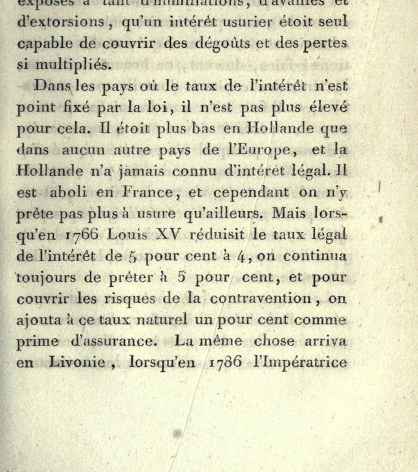
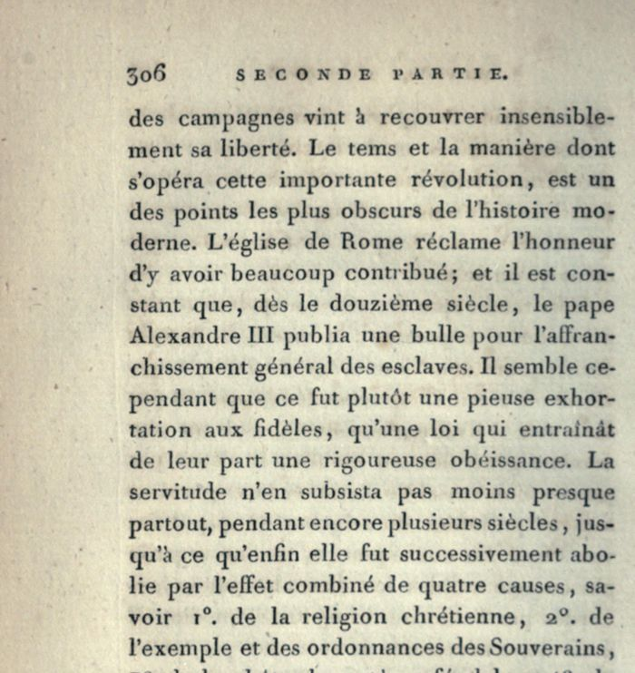

“Le même préjugé règne parmi nos Starovertsis” (tome III, p. 175)
French: St Petersburg 1815, tome III, book VI, ch. IV, p. 175, scan n184.
Despite the progress of industry and enlightenment, religious prejudices still keep up in many countries the aversion to lending at interest. In Catholic states, for example, rich people sometimes scruple to draw an innocent profit from their money; they prefer to bury it rather than put it into circulation to the advantage of society, of the borrower and of themselves. The same prejudice reigns among our Starovertsy [Old Believers] and the other sectaries who resemble them.
Original French
Malgré le progrès de l’industrie et des lumières, les préjugés religieux maintiennent encore dans bien des pays l’aversion pour le prêt à intérêt. Dans les États catholiques, par exemple, les gens riches se font quelquefois scrupule de tirer un profit innocent de leur argent; ils aiment mieux l’enfouir que de le faire circuler avec avantage pour la société, pour l’emprunteur, et pour eux-mêmes. Le même préjugé règne parmi nos Starovertsis et les autres sectaires qui leur ressemblent.
Lecky’s note 62 supports “a Russian political economist” on the Old Believers (“Starovertsis”). Storch puts them beside the scruples of rich Catholics.
Laws that raised interest by trying to lower it (tome III, pp. 187–188)
French: St Petersburg 1815, tome III, book VI, ch. V, pp. 187–188, scans n196–n197.

In countries where the rate of interest is not fixed by law, it is no higher for that. It was lower in Holland than in any other country in Europe, and Holland never had a legal rate. It has been abolished in France, and yet there is no more usury there than elsewhere. But when in 1766 Louis XV reduced the legal rate of interest from five per cent to four, people went on lending at five per cent, and, to cover the risk of breaking the law, added one per cent to this natural rate as an insurance premium. The same thing happened in Livonia when in 1786 the Empress Catherine reduced the legal rate from six per cent to five: until then one could obtain in that province, on good security, capital at six per cent; from then on one had to pay seven per cent and even more.
Original French
Dans les pays où le taux de l’intérêt n’est point fixé par la loi, il n’est pas plus élevé pour cela. Il étoit plus bas en Hollande que dans aucun autre pays de l’Europe, et la Hollande n’a jamais connu d’intérêt légal. Il est aboli en France, et cependant on n’y prête pas plus à usure qu’ailleurs. Mais lorsqu’en 1766 Louis XV réduisit le taux légal de l’intérêt de 5 pour cent à 4, on continua toujours de prêter à 5 pour cent, et pour couvrir les risques de la contravention, on ajouta à ce taux naturel un pour cent comme prime d’assurance. La même chose arriva en Livonie, lorsqu’en 1786 l’Impératrice [p. 188] Cathérine réduisit le taux légal de 6 pour cent à 5: jusque-là on avoit pu se procurer dans cette province, sur de bonnes sûretés, des capitaux à 6 pour cent; dès-lors il fallut payer 7 pour cent et même plus.
The end of the passage on p. 188 was read in the OCR. Lecky’s note 59 has both examples; his “Catherine of Russia … the general rate of interest” is wider than Storch’s Livonian case.
Four causes that ended serfdom, the first Christianity (tome V, pp. 306–310)
French: St Petersburg 1815, tome V, pp. 306–310, scans n315–n319. Excerpt from p. 306.

… [the population] of the countryside gradually recovered its freedom. The time and manner of this important revolution is one of the most obscure points of modern history. The Church of Rome claims the honour of having contributed much to it; and it is certain that as early as the twelfth century Pope Alexander III published a bull for the general emancipation of slaves. It seems, however, to have been rather a pious exhortation to the faithful than a law requiring their strict obedience. Servitude survived almost everywhere for several more centuries, until at last it was abolished step by step by the combined effect of four causes: first, the Christian religion; second, the example and ordinances of sovereigns; third, the fall of the feudal system; and fourth, the better-understood interest of the owners.
Original French
… des campagnes vint à recouvrer insensiblement sa liberté. Le tems et la manière dont s’opéra cette importante révolution, est un des points les plus obscurs de l’histoire moderne. L’église de Rome réclame l’honneur d’y avoir beaucoup contribué; et il est constant que, dès le douzième siècle, le pape Alexandre III publia une bulle pour l’affranchissement général des esclaves. Il semble cependant que ce fut plutôt une pieuse exhortation aux fidèles, qu’une loi qui entraînât de leur part une rigoureuse obéissance. La servitude n’en subsista pas moins presque partout, pendant encore plusieurs siècles, jusqu’à ce qu’enfin elle fut successivement abolie par l’effet combiné de quatre causes, savoir 1°. de la religion chrétienne, 2°. de l’exemple et des ordonnances des Souverains, 3°. de la chute du système féodal, et 4°. de l’intérêt mieux entendu des propriétaires.
The last clause (the third and fourth causes) is from the OCR. On pp. 307–310 (OCR) Storch describes manumission at the altar and on the deathbed, and concludes that “it is one of the greatest benefits of the Christian religion to have helped abolish slavery”, the subject of Lecky’s note 7.
Backlinks
Every place in Rationalism in Europe that links to this page (generated automatically when the site is built).